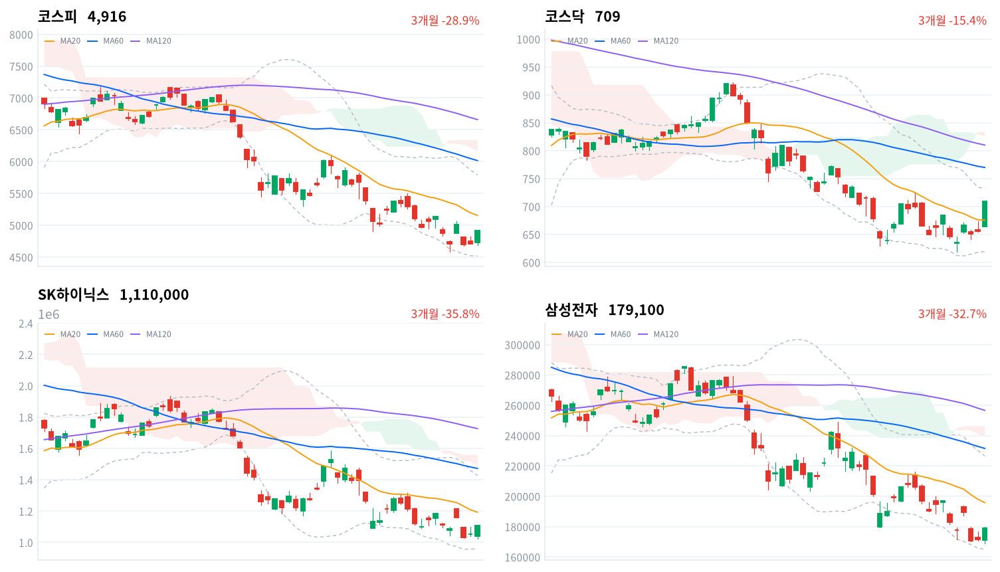

미국 증시가 추수감사절로 쉰 날, 외국인이 코스피를 1조1,591억원 순매수한 가운데(당일 잠정) 지수는 4.34% 올라 4,915.68로 마감했다. 증권시장안정펀드 확대 검토와 중국 국무원의 증시 안정책이 같은 날 나왔고, 코스닥은 8.13% 올라 700선을 되찾았다.
미국 현물이 쉰 날의 하루 매수만으로 11월 외국인 매도 국면이 끝났다고 보기는 이르다. 미국 현물이 다시 열린 뒤 11월 30일 정규장의 외국인 수급이 가장 가까운 확인이다.
외국인은 코스피에서 1조1,591억원을 순매수했다(당일 잠정). 순매수 가운데 1조317억원이 전기·전자 업종에 들어갔다는 보도가 나왔고, SK하이닉스와 삼성전자가 거래대금 1·2위를 차지했다. 이날 미국 현물시장은 추수감사절로 쉬었다. 외국인이 장중에 받은 미국 신호는 나스닥 선물이 2%대 강세였다는 보도뿐이고, 한국장 시간대 선물 시세는 수집하지 못했다.
장 마감 뒤 보도는 이날을 증권시장안정펀드 확대 기대 속 「외국인 귀환」으로 설명했다. 우리는 외국인 매수의 이유를 증안펀드에서 찾기 어렵다고 본다. 증안펀드는 국내 금융회사가 출자하는 국내 기관 자금이고, 증액 규모와 가동 시점이 정해지지 않은 검토 단계다. 매수가 지수 비중이 큰 반도체 대형주에 몰린 것은 미국 현물이 쉬는 날 선물 강세를 한국 메모리로 받은 모습에 더 가깝다. 시장이 이 매수의 지속성을 어떻게 보는지 잴 외국인 포지션·선물 수급 자료는 없어, 하루 매수와 재진입 가운데 어느 쪽이 가격에 들어 있는지는 판단할 수 없다. 대신증권은 추세 반전을 말하려면 외국인 순매수가 이어지는지 확인이 필요하다고 진단했다는 보도가 나왔다.
11월 외국인 매도가 반도체 비중 축소를 마쳤고, 한·중 동시 부양과 이날 지급된 삼성전자 배당의 재투자 기대가 위험 프리미엄을 낮춰 외국인 재진입이 시작됐을 수도 있다. 12개 섹터 가운데 은행만 내린 폭넓은 상승은 이 설명과도 부합하고, 대만가권이 0.40% 오르는 데 그친 점은 선물 신호만으로 설명하기 어려운 부분이다. 그래도 미국 현물이 쉰 하루의 자료라 우리는 하루 매수 쪽으로 본다. 두 설명은 미국 현물이 다시 열린 뒤의 외국인 수급으로 확인한다. 11월 30일~12월 4일 다섯 거래일의 코스피 외국인 순매수 합계가 0 미만이면 하루 매수 해석을 뒷받침하고, +1조원을 넘으면 재진입 시작 해석을 우선 설명으로 보고 우리 해석을 철회한다. 0~+1조원이면 어느 쪽으로도 판단하지 않고 닫는다. 11월 30일 회의에서 증안펀드 증액·가동이 확정되면 정책 효과와 재진입을 가르기 어려워지므로 그 내용을 함께 적는다.
새로 제안할 상품은 없다. 미국 반도체·AI 하드웨어 테마에 이날 한국 장이 보탠 정보는, 미국 현물이 쉬는 동안 외국인이 한국 메모리 대형주를 다시 샀다는 사실이다(SK하이닉스 +5.41%, 삼성전자 +4.55%). 하루 반등만으로 메모리 업황 할인이 걷혔다고 보기는 이르다. 지수 상품의 거래도 한쪽으로 쏠리지 않아, KODEX 레버리지 1.63조원과 KODEX 인버스 1.25조원이 함께 거래됐다. 가장 가까운 결정적 일정은 11월 30일 정규장이다. 미국 현물이 재개된 뒤에도 외국인 순매수가 이어지는지를 기다린다.
코스피가 11월 27일 기준 20일 이동평균 5,154 위에서 마감하면, 외국인 매수를 하루짜리로 본 판단을 철회한다. 이날 종가에서 20일선까지 오르려면 외국인 매수가 며칠 더 이어져야 하고, 그만한 반등이 나오면 재진입 시작 설명을 우선 설명으로 본다. 코스피는 이날 11월 27일 기준 일목 전환선 4,862 위로 올라섰지만, 기준선 5,343과 구름대 아래의 역배열은 그대로다.
출처: 이코노미퀸, 비즈워치, 서울경제TV, 알파경제, 대신증권(보도 인용)
미국 증시는 11월 26일 추수감사절로 쉬어, 전일 미국장 수치는 11월 25일 미국장 기준이다. 그날 S&P 500은 0.25%, 나스닥은 0.62% 내렸고 다우는 0.33% 올랐다. 아시아는 모두 올랐다. 상해종합이 3.73%, 닛케이와 항셍이 각각 2.11%, 대만가권이 0.40% 올랐고, 코스피 상승률은 네 지수 평균보다 2.25%포인트 높았다.
코스피는 전일 종가 4,711.21보다 조금 높은 4,728.80에서 출발했지만 장 초반 4,682.43까지 밀렸다. 한국 정규장 동안의 미국 선물 시세는 수집하지 못했다. 코스닥은 시가 664.52가 그날의 저가였다.
코스피는 고가 4,922.94 바로 아래인 4,915.68로 마감해 하루 범위의 맨 위에서 끝났다. 코스닥도 고가 710.90 부근인 708.99로 마치며 700선을 되찾았다. 원/달러는 장중 내내 내려 원화가 강해졌다.
반도체 대형주가 지수 상승을 이끌었고, 증권·기계·전기장비 같은 반도체 밖 업종도 폭넓게 올랐다. 외국인은 코스피와 코스닥에서 함께 샀고 개인은 두 시장에서 팔았다. 정오께 중국 국무원 상무회의가 자본시장 안정책을 내놓은 뒤 중국 증시가 오름폭을 키웠다는 보도가 나왔고, 코스피도 오후 내내 꾸준히 올랐다. 다만 코스피는 그 전인 10시 30분에 이미 4,809.41까지 올라 있어, 반등이 중국 발표에서 시작된 것은 아니다. 시간외 거래 자료는 없다.
출처: 뉴스핌, SBS Biz, 뉴스1
코스피는 4.34% 오른 4,915.68, 코스닥은 8.13% 오른 708.99로 마감했다. 코스피는 3거래일 만에 4,900선을 되찾았지만 20일 이동평균 5,154보다 아직 4.6% 낮고, 코스닥은 20일 이동평균 676 위로 올라섰다. 코스닥 상승률이 코스피의 두 배에 가까웠다.
| 지수 | 종가 | 등락률 | 시가 | 고가 | 저가 | 전일 종가 |
|---|---|---|---|---|---|---|
| 코스피 | 4,915.68 | +4.34% | 4,728.80 | 4,922.94 | 4,682.43 | 4,711.21 |
| 코스닥 | 708.99 | +8.13% | 664.52 | 710.90 | 664.52 | 655.71 |
| 주체 | 순매수(억원) |
|---|---|
| 개인 | -18,017 |
| 외국인 | +11,591 |
| 기관 | +2,332 |
| 주체 | 순매수(억원) |
|---|---|
| 개인 | -8,864 |
| 외국인 | +3,018 |
| 기관 | +5,875 |
외국인 매수는 두 시장에서 함께 나왔고, 개인이 그 물량을 받았다. 외국인은 코스피를 1조1,591억원 순매수했다(전일 880억원 순매도, 당일 잠정). 11월 16일부터 26일까지 9거래일 가운데 외국인이 코스피를 산 날은 11월 24일(8,130억원) 하루뿐이었고, 그 매수도 다음 날 1조8,193억원 순매도로 바뀌었다. 기관은 2,332억원을 순매수해(전일 7,529억원 순매수) 매수 규모를 줄였고, 개인은 1조8,017억원을 순매도했다(전일 1조748억원 순매도). 외국인의 조 단위 순매수는 9월 7일 이후 처음이라는 보도가 나왔고, 자사주 매입이 잡히는 기타법인도 4,106억원을 순매수했다는 보도가 있다. 수집한 자료에는 업종별 순매매가 없어, 외국인 매수가 전기·전자에 몰렸다는 보도는 확인하지 못했다.
코스닥에서는 기관이 5,875억원(전일 2,378억원 순매수), 외국인이 3,018억원(전일 1,115억원 순매도)을 순매수했고 개인이 8,864억원을 순매도했다(전일 1,339억원 순매도, 당일 잠정). 코스닥 기관 순매수가 코스피의 두 배를 넘은 날 코스닥 상승률도 코스피의 두 배에 가까웠다. 두 수치가 함께 움직였을 뿐이고, 증안펀드 기대가 기관 자금을 중소형주로 끌었는지는 업종별 자료가 없어 가리지 못한다.
장중 누적 수급과 프로그램 매매는 받을 수 있는 자료가 없어 싣지 않는다.
출처: 시사저널e, 세계일보
| 순위 | 종목/ETF | 구분 | 거래대금 | 비고 |
|---|---|---|---|---|
| 1 | SK하이닉스 | 개별주 | 3.20조원 | - |
| 2 | 삼성전자 | 개별주 | 2.47조원 | - |
| 3 | 반도체 테마 ETF | 테마·롱 | 1.39조원 | 29종 합산 |
| 4 | 삼성전기 | 개별주 | 0.71조원 | - |
| 5 | 삼성전자우 | 개별주 | 0.47조원 | - |
| 6 | KODEX CD금리액티브(합성) | 단기금리·현금성 | 0.34조원 | - |
| 7 | SK스퀘어 | 개별주 | 0.27조원 | - |
| 8 | 삼성SDI | 개별주 | 0.25조원 | - |
| 9 | 2차전지 테마 ETF | 테마·롱 | 0.24조원 | 14종 합산 |
| 10 | 에이피알 | 개별주 | 0.23조원 | - |
단위 백만원 원본을 조 단위로 환산했다. 같은 기초자산 ETF는 방향별로, 같은 테마 섹터 ETF는 테마별로 묶고 지수·해외 ETF는 제외했다.
거래는 반도체에 몰렸고, 이날은 주가도 같은 쪽으로 크게 움직였다. SK하이닉스(3.20조원)와 삼성전자(2.47조원)가 1·2위, 반도체 테마 ETF 29종 합산(1.39조원)이 3위였고, 반도체와반도체장비 업종은 5.42% 올랐다. 2차전지에서도 삼성SDI(0.25조원)가 8위, 2차전지 테마 ETF 14종 합산(0.24조원)이 9위에 들었다. 반등 날에도 현금성 상품인 KODEX CD금리액티브가 0.34조원으로 6위에 남았고, 10위 에이피알은 0.34% 오르는 데 그쳐 거래가 몰린 종목 가운데 주가가 거의 오르지 않았다. 상위 10에 인버스 상품은 없다. 거래대금은 거래의 양이지 방향이 아니어서, 이 순위만으로 어느 쪽으로 돈이 들어왔는지는 말할 수 없다.
상승은 넓었다. 12개 섹터 가운데 은행(-0.57%)만 내렸고 증권(+12.08%)·2차전지(+7.88%)·반도체(+7.86%)가 가장 많이 올랐다. 반도체와반도체장비 업종은 175종목 가운데 169종목이 올라 대형 두 종목만이 아니라 업종 전체가 함께 움직였다. 증권(+8.67%, 39종목 중 38종목 상승)·기계(+8.39%, 107종목 중 95종목)·전기장비(+7.30%, 35종목 중 33종목)도 거래대금이 받친 폭넓은 상승이었다. 업종 상승률 1·2위인 생명과학도구및서비스(+11.73%)와 생물공학(+11.41%)은 거래대금이 받치지 않은 개별 종목 상승이었다.
하루 상승이 한 달 낙폭을 메우지는 못했다. 반도체는 1개월 기준 23.29%, 건설은 11.44% 내린 상태이고, 1주 기준으로는 증권(+15.06%)과 로봇(+13.20%)이 앞섰다.
반도체는 대형주와 중소형주가 함께 올랐다. SK하이닉스가 5.41%, 삼성전자가 4.55% 올랐고 삼성전자우(+5.84%)·SK스퀘어(+5.37%)·이수페타시스(+5.39%)가 뒤를 이었으며 한미반도체는 9.14% 올랐다. 미국 휴장 중 나스닥 선물 강세와 외국인의 전기·전자 매수, 이날 지급된 삼성전자 3분기 배당(주당 4,601원)의 재투자 기대가 배경으로 꼽혔다는 보도가 나왔다. 연합뉴스는 미국 월스트리트저널을 인용해 AI 인프라 투자 붐으로 메모리 반도체 공급난이 심해지면서 글로벌 전자 업계가 메모리 칩 확보 경쟁을 벌이고 있다고 보도했다. 한미반도체·이수페타시스의 개별 재료는 확인되지 않았다.
은행은 이날 내린 몇 안 되는 업종이었다. 신한지주가 0.94% 내렸고 KB금융(-0.21%)·하나금융지주(-0.84%)도 약했다. 확인된 재료는 없다.
KT&G는 1.84% 내렸다. 확인된 재료는 없다.
삼성SDI는 8.25% 올랐다. 회사 고유의 재료는 확인되지 않았고, 포스코퓨처엠(+7.35%)·LG에너지솔루션(+4.80%) 등 2차전지 대형주가 함께 오른 날이었다.
방산주가 크게 올랐다. 한화시스템이 13.76%, LIG디펜스앤에어로스페이스가 7.31%, 한화에어로스페이스가 5.74% 올랐다. 후티 반군과 사우디가 11월 25일 라스 타누라, 26일 자잔의 정유시설을 두고 공습을 주고받아 중동 긴장이 높아진 것이 배경으로 꼽혔다는 보도가 나왔다.
출처: 이코노미퀸, 비즈워치, 한국경제, 와이드경제
주가가 급반등한 날 국고채 금리는 단기물 중심으로 올랐다. 3년물은 6.3bp 오른 3.685%, 10년물은 4.2bp 오른 3.832%였고 CD 91일물은 3.40%로 변하지 않았다. 원/달러는 한국장 시간대 마지막 관측이 1,336.42원(15:30)이었다.
| 지표 | 금리 | 전일比(bp) | 기준일 |
|---|---|---|---|
| 국고채 3년 | 3.685% | +6.3 | 2026-11-27 |
| 국고채 10년 | 3.832% | +4.2 | 2026-11-27 |
| CD 91일 | 3.40% | 0.0 | 2026-11-27 |
| 회사채 AA- 3년 | 4.340% | +4.6 | 2026-11-27 |
| 한국은행 기준금리 | 3.00% | 0.0 | 2026년 10월 기준 |
기준금리 행은 한국은행 통계의 10월 월값이다. 11월 26일 금통위의 3.25% 인상은 이 표에 아직 반영되지 않았다.
커브는 2거래일째 평평해졌다. 10년물과 3년물의 금리차는 14.7bp로 하루 새 2.1bp 좁혀졌고, 최근 2년(535거래일) 가운데 이보다 좁았던 날이 26일뿐이다. 금리 인상 다음 날에도 3년물이 10년물보다 더 올라 금리 상승은 단기 쪽에 몰렸다. 다만 이날은 주가가 급반등해 안전자산 수요가 줄어든 날이기도 해, 3년물 상승이 추가 인상 기대 때문인지 위험 선호 회복 때문인지는 이날 자료로 가리지 못한다.
신용 가격은 조금 좁혀졌다. 회사채 AA- 3년물과 국고채 3년물의 금리차는 65.5bp로 1.7bp 좁혀졌고, 최근 2년(535거래일)의 한가운데쯤에 있다. 회사채 금리도 4.6bp 올랐지만 국고채보다 덜 올라, 주가 반등 날 기업 신용에 더 얹힌 부담은 보이지 않았다.
11월 27일 금리: 국고채 10년 3.832%, 3년 3.685%, 회사채 AA- 3년 4.340%. (3.832 − 3.685) × 100 = 14.7bp, 변화 4.2 − 6.3 = −2.1bp. (4.340 − 3.685) × 100 = 65.5bp, 변화 4.6 − 6.3 = −1.7bp.
| 미국 참조 지수 | 구분 | 관측 | 등락률 | 업종 내 상승 비율 | 기준일 |
|---|---|---|---|---|---|
| 반도체·AI 하드웨어 | 업종 | 반도체와반도체장비 | +5.42% | 97% | 11/27 |
| 반도체·AI 하드웨어 | 종목 | SK하이닉스 | +5.41% | – | 11/27 |
| 반도체·AI 하드웨어 | 종목 | 삼성전자 | +4.55% | – | 11/27 |
| 반도체·AI 하드웨어 | 지수 | 대만가권 | +0.40% | – | 11/27 |
| 전력망 | 업종 | 전기장비 | +7.30% | 94% | 11/27 |
| 전력망 | 업종 | 전기제품 | +6.62% | 88% | 11/27 |
| 전력망 | 종목 | HD현대일렉트릭 | +8.00% | – | 11/27 |
| 전력망 | 종목 | LS ELECTRIC | +7.32% | – | 11/27 |
| 전력망 | 종목 | 효성중공업 | +6.88% | – | 11/27 |
| 방산 | 업종 | 우주항공과국방 | +6.70% | 95% | 11/27 |
| 방산 | 종목 | 한화에어로스페이스 | +5.74% | – | 11/27 |
| 방산 | 종목 | LIG디펜스앤에어로스페이스 | +7.31% | – | 11/27 |
| 산업재 | 업종 | 기계 | +8.39% | 89% | 11/27 |
| 산업재 | 업종 | 조선 | +4.75% | 90% | 11/27 |
| 산업재 | 종목 | HD현대중공업 | +5.03% | – | 11/27 |
| 산업재 | 종목 | 삼성중공업 | +5.40% | – | 11/27 |
| 금속·광업 | 업종 | 철강 | +3.91% | 77% | 11/27 |
| 금속·광업 | 업종 | 비철금속 | +5.65% | 88% | 11/27 |
| 금융 | 업종 | 증권 | +8.67% | 97% | 11/27 |
| 금융 | 종목 | KB금융 | -0.21% | – | 11/27 |
| 금융 | 종목 | 신한지주 | -0.94% | – | 11/27 |
| 소프트웨어 | 업종 | 소프트웨어 | +6.40% | 87% | 11/27 |
| 소프트웨어 | 업종 | IT서비스 | +6.03% | 86% | 11/27 |
| 소프트웨어 | 종목 | NAVER | +2.00% | – | 11/27 |
| 에너지 | 업종 | 석유와가스 | +6.26% | 90% | 11/27 |
| 일본 | 지수 | 닛케이 | +2.11% | – | 11/27 |
| 중국 | 지수 | 항셍 | +2.11% | – | 11/27 |
| 중국 | 지수 | 상해종합 | +3.73% | – | 11/27 |
원/달러는 한국장 시간대 1,346.98원(09:00)에서 내려 1,336.42원(15:30)에서 마지막으로 관측됐고, 그날 저점 1,336.34원(15:30) 바로 위에서 끝났다. 외국인 주식 매수와 같은 날 원화가 강해져, 해외주식을 원화로 환산한 가치는 이날 환율 쪽에서 줄었다. 원화 대기 자금의 참고 금리인 CD 91일물은 금리 인상 다음 날에도 움직이지 않았다.
반도체는 한국과 대만이 크게 엇갈렸다. 한국 반도체와반도체장비 업종이 5.42% 오르는 동안 대만가권은 0.40% 오르는 데 그쳤다. 미국 현물이 쉬는 날 아시아 반도체에 공통으로 들어온 수요 신호였다면 대만도 함께 올랐을 가능성이 크다. 그래서 이날 한국 메모리 반등은 미국 반도체·AI 하드웨어 테마의 수요 전망이 바뀌었다는 정보보다, 외국인 매수와 국내 정책 기대처럼 한국 장에만 있던 재료와 더 부합한다.
금융당국이 현재 10조7,600억원 규모인 증권시장안정펀드를 20조원 이상으로 늘리는 방안을 검토하고 있다는 보도가 나왔다. 산업은행은 출자 금융회사 25곳의 추가 출자 여력을 점검했고, 11월 29일 투자관리위원회와 11월 30일 시장안정 점검회의가 예정돼 있다. 증액 규모와 가동 시점은 정해지지 않았고, 실제 집행은 확인되지 않았다.
증안펀드가 가동되면 금융회사들이 출자한 돈이 지수가 급락할 때 대형주를 사들이는 대기 자금이 되고, 하방 위험이 줄었다는 기대가 주식 할인율을 낮춘다. 이날은 집행 전이라 그 기대만 가격에 들어왔다. 수혜 업종으로 꼽히는 증권에서는 미래에셋증권(+15.87%)과 키움증권(+14.22%)이 급등해 정책 기대와 같은 방향이었다. 키움증권 한지영 연구원은 증안펀드 증액 가능성과 당국의 실무적 정책 대응이 반등 재료가 될 수 있다고 진단했고, 다만 매수 주체 제약으로 반등 탄력은 제한될 수 있다고 봤다. 11월 30일 회의에서 증액 규모와 가동 시점이 확정되지 않으면 이날 정책 기대로 오른 몫이 되돌려질 수 있다.
중국 국무원 상무회의가 11월 27일 장중에 자본시장 안정책을 내놓았다는 보도가 나왔다. 중앙후이진 등 국가 자금의 시장 안정 기능을 강화하고, 보험·연기금의 장기 자금 유입과 상장사 배당·자사주 확대를 주문하는 내용이다. 상해종합은 3.73% 올랐다. 시장 일각에서는 기관 포지션이 역대 최저 수준이라 매수 여력이 큰 상태에서 자금이 들어온, 수급에 따른 과매도 되돌림이라는 시각도 있었다.
중국 증시 부양은 아시아 위험 선호를 높여 외국인의 아시아 주식 비중 결정에 닿는다. 다만 코스피는 발표 전인 오전에 이미 크게 올라 있었고, 반도체 장비나 중국 소비 관련 국내주에 따로 붙은 반응은 확인되지 않았다. 국가 자금의 실제 매수 공시가 다음 분기점이고, 일정은 미확정이다.
출처: 비즈워치, 서울경제TV, 서울신문, 알파경제, 뉴스핌, SBS Biz, 뉴스1
11월 26일 판단은 유효하다. 코스피는 4,915.68로 마감해 11월 26일 기준 일목 전환선 4,957 위로 올라서지 못했으므로, 전날 반도체 반등을 급락 뒤 되돌림으로 본 판단을 미리 정한 조건대로 유지한다. 다만 기준에 못 미친 폭은 작다. 기다린 조건이었던 11월 27일 정규장의 외국인 순매도 중단과 반도체 상승분 유지는 둘 다 충족됐다. 외국인은 1조1,591억원 순매수로 돌아섰고(당일 잠정) SK하이닉스는 5.41% 더 올랐다. 이 결과는 되돌림 해석을 약하게 하지만, 미국 현물이 쉰 날의 하루 매수라 판단을 바꾸기에는 이르다고 보고 외국인 매수의 지속성은 새 판단으로 따로 확인한다. 사전에 정한 기간 검증인 12월 2일 종가 기준 SK하이닉스와 코스피의 수익률 차(11월 25일 대비 ±3%포인트)는 이날 중간값이 +3.12%포인트로 시장 전반 위험 축소 쪽 기준을 넘어 있고, 판정은 12월 2일 종가로 한다.
| 판단(세운 날) | 오늘 결과 | 상태 |
|---|---|---|
| 외국인 순매수는 하루 매수(11월 27일) | 외국인 1조1,591억원 순매수(당일 잠정) | 새로 세움 — 12월 4일 종가 |
| 한은 추가 인상, 3년물에 이미 반영(11월 26일) | 국고채 3년 3.685%(+6.3bp) | 판단 보류 — 12월 3일 금리 |
| 반도체 급락은 메모리 업황 할인 재개(11월 25일) | SK하이닉스−코스피 +3.12%포인트 | 약화 — 12월 2일 종가 |
| 코스피 반등은 하루 안도 반등(11월 24일) | 11월 24일 대비 코스피 -1.80% | 판단 보류 — 12월 1일 종가 |
| 건설주 급락은 데이터센터 할인(11월 23일) | 현대건설 종가 미수집 | 판단 보류 — 11월 30일 종가 |
| 삼성전자 약세는 중국 출하 이익 경로(11월 20일) | 삼성전자−SK하이닉스 -1.91%포인트 | 판단 보류 — 11월 27일 종가로 종료 |
외국인 매수를 하루짜리로 본 판단(11월 27일)은 오늘 세웠다. 출발점은 이날 코스피 외국인 1조1,591억원 순매수다(당일 잠정). 11월 30일~12월 4일 다섯 거래일의 코스피 외국인 순매수 합계가 0 미만이면 하루 매수 해석을 뒷받침하고, +1조원을 넘으면 재진입 시작 해석을 우선 설명으로 보고 철회한다. 0~+1조원이면 어느 쪽으로도 판단하지 않고 닫는다. 일자별 값은 잠정치를 그대로 더한다.
삼성전자 중국 출하 판단(11월 20일)은 판정일을 맞아 어느 쪽으로도 가리지 못한 채 닫는다. 11월 20일 종가 대비 삼성전자는 2.18%, SK하이닉스는 0.27% 내려 차가 -1.91%포인트로 미리 정한 기준(±3%포인트) 안이다. 방향은 삼성전자 약세 쪽이었지만 크기가 기준에 못 미쳤고, 그사이 미 상무부의 출하 허가 보도도, 출하 중단의 품목·규모도 새로 나오지 않았다. 기간 중 지수가 하루 3~6%씩 오르내려 두 종목 모두 시장 전반 움직임에 묶였다.
메모리 업황 할인 판단(11월 25일)은 중간값 +3.12%포인트가 시장 전반 위험 축소 쪽 기준(+3%포인트)을 넘어 약해졌다. 다만 SK하이닉스는 지수 비중과 베타가 커 지수가 크게 오른 날 차이가 벌어지기 쉽고, 판정일까지 세 거래일이 남아 있다. 메모리 가격이나 마이크론 관련 새 자료는 없다. 코스피 안도 반등 판단(11월 24일)은 이날 반등으로 중간값이 -1.80%가 돼 하루 안도 반등 쪽 기준(-3%) 안으로 들어왔다. 금리 인상 반영 판단(11월 26일)은 3년물이 3.685%로 범위 상단 3.722%에 3.7bp 차로 다가섰지만, 주가 급반등 날의 상승이라 정책 기대 때문인지는 가리지 못한다. 건설주 판단(11월 23일)은 현대건설 종가가 수집되지 않아 중간값을 계산하지 못했고, 데이터센터 수주 취소·지연 공시는 확인되지 않았다.
수익률 = (11월 27일 종가 ÷ 기준 종가 − 1) × 100. 삼성전자 183,100원 → 179,100원 −2.18%, SK하이닉스 1,113,000원 → 1,110,000원 −0.27%, 차 −1.91%포인트. SK하이닉스 1,030,000원 → 1,110,000원 +7.77%, 코스피 4,697.51 → 4,915.68 +4.64%, 차 +3.12%포인트. 코스피 5,006.03 → 4,915.68 −1.80%. 국고채 3년 3.722 − 3.685 = 0.037%포인트(3.7bp).
| 시점 | 확인할 것 | 가르는 판단 |
|---|---|---|
| 11월 30일 정규장 | 미국 현물 재개 뒤 외국인 순매수 지속 여부 | 외국인 매수가 하루로 끝나나 |
| 11월 29~30일 | 증안펀드 증액 규모·가동 시점 확정 여부 | 정책 효과와 외국인 재진입 구분 |
| 11월 30일 종가 | 현대건설−코스피 수익률 차(11월 23일 대비) | 데이터센터 할인인가, 하루 위험 축소인가 |
| 12월 1일 종가 | 코스피 수익률(11월 24일 대비 ±3%) | 하루 안도 반등인가, 재평가 시작인가 |
| 12월 2일 종가 | SK하이닉스−코스피 수익률 차(11월 25일 대비 ±3%포인트) | 메모리 업황 할인인가, 시장 전반 위험 축소인가 |
| 12월 3일·4일 | 국고채 3년 3.522~3.722%, 외국인 5일 합계 | 인상 반영 여부, 외국인 재진입 여부 |
외국인 5일 합계는 11월 30일~12월 4일 코스피 외국인 순매수를 더한 값이다(0 미만이면 하루 매수, +1조원 초과면 재진입). 중국 국가 자금의 매수 공시는 일정 미확정이다.

최근 3개월 일봉에 20·60·120일 이동평균, 볼린저 밴드, 일목 구름대를 겹쳤다. 상승은 녹색, 하락은 적색이다.
| 자산 | 위치(이평·구름) | 가까운 저항 | 가까운 지지 |
|---|---|---|---|
| 코스피 | 전환선 위, 세 이동평균·구름 아래(역배열) | 20일선 5,154 → 기준선 5,343 | 전환선 4,862 → 20일 저점 4,587 |
| 코스닥 | 20일선·기준선 위, 60일선·구름 아래 | 볼린저 상단 732 → 20일 고점 738 | 기준선 696 → 20일선 676 |
| SK하이닉스 | 전환선·세 이동평균·구름 아래(역배열) | 전환선 112만원 → 20일선 119만원 | 20일 저점 102만원 |
| 삼성전자 | 전환선·세 이동평균·구름 아래(역배열) | 전환선 18만4천원 → 20일선 19만6천원 | 20일 저점 16만9천원 → 볼린저 하단 16만5천원 |
코스피는 11월 27일 기준 전환선 4,862 위로 올라섰지만 20일선 5,154와 기준선 5,343, 그 위 구름대 아래의 역배열은 그대로다. 종가로 20일선을 넘으면 기준선 5,343이 다음 저항이고, 아래로는 전환선 4,862와 20일 저점 4,587이 가장 가까운 지지다. 코스닥은 20일선 676과 기준선 696을 함께 넘어 볼린저 상단 732에 다가섰다.
위 레벨은 이동평균·볼린저밴드·일목균형표와 스윙 고저를 11월 27일 종가로 기계적으로 계산한 값이며 투자 권유가 아니다. 종가에서 10% 넘게 떨어진 레벨은 싣지 않았다.